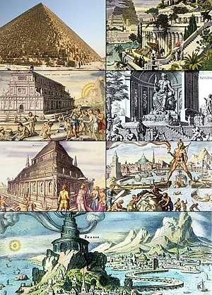

-
Семь чудес света
- Семь чудес света, или
семь чудес Древнего
мира (др.-греч.
ἑπτὰ θεάματα τῆς οἰκουμένης) — список самых прославленных
сооружений архитектуры. Составление списка самых знаменитых поэтов, философов, полководцев, великих царей, как и
памятников архитектуры и искусства — традиционный «малый» жанр греческой эллинистической поэзии и своего рода
упражнение в риторике. Сам выбор
числа освящён древнейшими представлениями о его полноте, законченности и
совершенстве, число 7 считалось
священным числом бога Аполлона («Семеро
против Фив», семь
мудрецов и т. п.).
Подобно
сборникам высказываний знаменитых мудрецов, собраниям анекдотов и
рассказам о диковинах, сочинения о семи чудесах
света были популярны в античную
эпоху и включали в себя описания самых грандиозных, самых великолепных или в
техническом смысле самых поразительных построек и памятников искусства. Вот почему их называли чудесами, в то
время
как в списке отсутствуют многие подлинные шедевры древней архитектуры и искусства — Акрополь в Афинах с творением
Фидия — статуей Афины, Парфенон,
прославленная статуя Афродиты
Книдской работы Праксителя
и т. д.
Упоминания о семи чудесах появляются в сочинениях греческих авторов, начиная с эпохи эллинизма. В тексте
одного египетского папируса (текст назван Дильсом
Laterculi Alexandrini (P. Berol. 13044); это папирус, датируемый I в.
до
н.
э.)[1],
представлявшего собой своего рода учебное пособие, упоминаются имена знаменитых законодателей, живописцев,
скульпторов, архитекторов, изобретателей, далее — самые большие острова, горы и реки и, наконец, семь чудес света.
«Отбор» чудес происходил постепенно, и одни чудеса сменяли другие.
-
Эволюция списка
-
Первый известный вариант списка чудес света появляется у Геродота в его «Истории».
Все чудеса, которых Геродот в
своём варианте насчитывает три, находились на острове Самос[2][3].
Остановился же я несколько подробнее на самосских делах потому, что самосцы воздвигли на своем острове три
самых
больших сооружения во всей Элладе. Во-первых, они пробили сквозной тоннель
в горе высотой в 150 оргий,
начинающийся у её подошвы, с выходами по обеим сторонам. Длина тоннеля 7 стадий, а высота и ширина по 8 футов.
Под
этим тоннелем по всей его длине они прокопали канал глубиной в 20 локтей и 3 фута ширины, через который в
город
по
трубам проведена вода из одного обильного источника. Строителем же этого водопроводного сооружения был
Евпалий,
сын Навстрофа, мегарец. Это одно из трёх сооружений. Второе — это дамба в море, возведённая вокруг гавани.
Дамба
эта 20 оргий высотой и более 2 стадий в длину. Третье сооружение — величайший из известных нам храмов.
Первым
строителем этого храма был Рек, сын Филея, самосец. Ради этих-то сооружений я и рассказал более подробно о
самосских делах.
Позже список расширился до семи чудес. В III веке до н. э.
появился новый список чудес. Его источником историки
считают небольшое стихотворение авторства Антипатра
Сидонского или Антипатра
Фессалоникийского[3]
Видел я стены твои, Вавилон, на которых просторно
И колесницам; видал Зевса в Олимпии я,
Чудо висячих садов Вавилона, колосс Гелиоса
И пирамиды — дела многих и тяжких трудов;
Знаю Мавсола гробницу огромную. Но лишь увидел
Я Артемиды чертог, кровлю вознёсший до туч,
Всё остальное померкло пред ним; вне пределов Олимпа
Солнце не видит нигде равной ему красоты.
Описанию Антипатра следует сочинение Филона
Александрийского (оратор IV в. н. э. или знаменитый механик III в.
до
н. э.) «О семи чудесах». Вероятно, после строительства Александрийского
маяка, это чудо инженерной мысли сменяет
в
списке стены Вавилона
(как
чудо света его упоминает Плиний
Старший в «Естественной
истории»). В ряде сочинений
вместо висячих садов вновь появлялись стены Вавилона, а маяк на о. Фарос заменялся Александрийской
библиотекой;
дополняли список также Пергамский
алтарь Зевса, дворец Кира в Персеполе,
«поющие» статуи Мемнона
близ египетских
Фив и сами Фивы,
храм Зевса в Кизике,
статуя Асклепия в Эпидавре, Афина Парфенос работы Фидия на афинском
Акрополе, в римский период — Колизей и Капитолий. Впоследствии список в разных комбинациях дополняли также храм
Соломона, Ноев ковчег, Вавилонская башня, храм Софии в Константинополе и так далее.